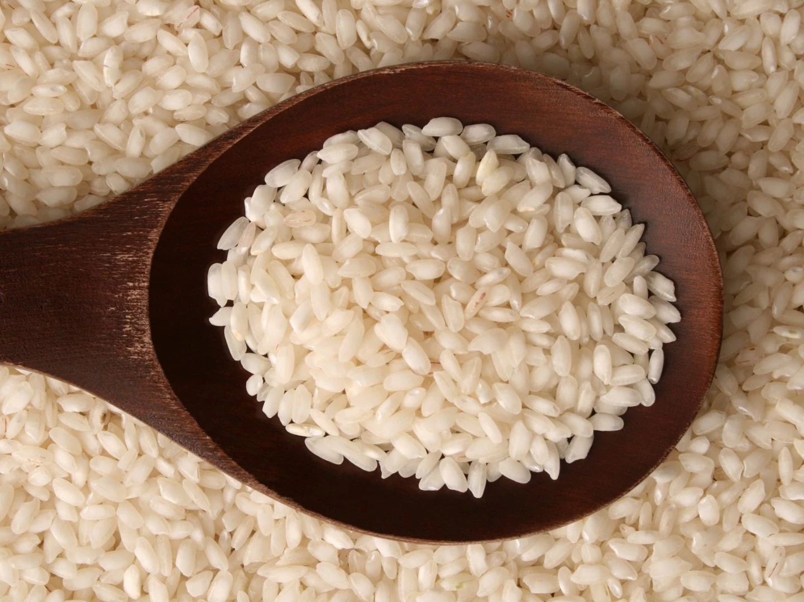

El arroz es un cereal y un alimento indispensable para una dieta sana y equilibrada. Está presente en prácticamente todas las cocinas del mundo. Es el segundo cereal más cultivado en todo el mundo después del maíz; sin embargo, es el de mayor importancia y más consumido por la especie humana. El origen de la domesticación del cultivo del arroz se ha debatido bastante, si bien es seguro que proviene de Asia, el origen dentro de este continente se debate entre dos gigantes: China y Japón.
Existen unas 10.000 variedades de arroz, todas ellas pertenecen a una de las dos subespecies de Oryza sativa: la índica, cultivada en los trópicos, o la japónica, cultivada en zonas de clima templado. El arroz se puede clasificar en función de su forma, color o tratamiento.
El Arroz Blanco Mahatma es una variedad tradicional y muy versátil, ya que tiene un sabor neutro y una textura ligera y esponjosa. Para obtener los mejores resultados, utiliza arroz blanco en tus salteados, guisos, pilafs de arroz y rellenos. Este tipo de arroz es perfecto para cualquier plato,desde una sencilla guarnición de elote y arroz hasta para preparar unos esponjosos pancakes de arroz para el desayuno.
:format(jpg)/f.elconfidencial.com%2Foriginal%2F39b%2Fcd4%2F86f%2F39bcd486fc610d01a553ccf07a0dfd6c.jpg)
El Arroz Integral Mahatma® tiene un característico tono marrón porque es 100% integral y se cosecha con su capa de cereal y salvado intactos, lo que le da un sabor a nuez y una textura masticable. Cuando se cocina, los granos del arroz de grano largo se mantienen esponjosos y separados, lo que lo hace perfecto para guisos, ensaladas y rellenos. Como añade un toque integral a las comidas, es perfecto para añadirlo a las ensaladas de arroz, como esta Ensalada de arroz con pollo y mango con verduras frescas.
El Arroz Basmati Mahatma® es una variedad sabrosa y aromática y, al cocinarse, los granos largos se mantienen delgados y separados, lo que lo hace perfecto para rellenos, ensaladas de arroz e incluso pudines de arroz. De hecho, la receta tradicional del arroz con leche se elabora con estos granos de arroz por su capacidad para absorber todos los sabores de la cremosa leche, la canela y el azúcar.
El Arroz Jazmín Mahatma se cultiva tradicionalmente en Tailandia, por lo que también se conoce como arroz jazmín tailandés. Esta variedad de arroz de grano largo tiene un sabor aromático, floral y exótico. Al cocinarse, sus granos se mantienen húmedos y conservan una textura suave perfecta para combinar con especias en un pilaf de arroz, ensaladas de arroz, salteados o un plato de arroz frito. Como los granos largos permanecen separados durante la cocción, el sabor se distribuye uniformemente, lo que lo hace ideal para esta receta de arroz con atún y tomate.
Aunque actualmente fose cultiva en muchos lugares, esta variedad de arroz es originaria de Italia y por ello se utiliza sobre todo en platos tradicionales italianos como el risotto. Se aconseja no enjuagar previamente este arroz antes de cocinarlo, ya que contiene almidones necesarios que se liberan al añadir calor, dando al plato una textura cremosa. El Arroz Arborio Mahatma® de Grano Medio está especialmente indicado para risottos como este risotto con chorizo y queso manchego.
